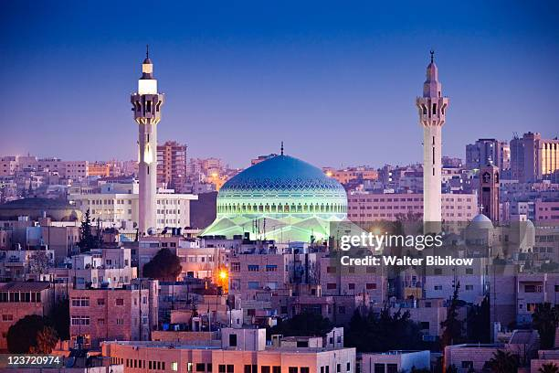

Amman is the capital and largest city of Jordan and is considered one of the oldest continuously inhabited cities in the world, with a history that dates back several thousand years. Built on a series of hills, Amman has long served as a cultural, political, and economic center in the region.
In ancient times, the city was known as Rabbath Ammon and later as Philadelphia during the Greco-Roman period, when it became part of the Roman Empire. Remnants of this era can still be seen today in landmarks such as the Roman Theatre of Amman, a well-preserved structure that once hosted thousands of spectators, and the Amman Citadel, which contains ruins from multiple civilizations, including Roman, Byzantine, and Umayyad periods.
Amman has also been influenced by various cultures and empires over the centuries, including Islamic caliphates and Ottoman rule. These influences have shaped the city’s architecture, traditions, and identity, making it a unique blend of ancient history and modern development. Today, Amman is a thriving modern city known for its vibrant culture and welcoming atmosphere. It serves as the political and administrative center of Jordan while also being a hub for education, business, and tourism. The city features a mix of old and new, from traditional markets and historic mosques to contemporary buildings and urban districts.
Amman is also recognized for its rich culinary scene, offering traditional dishes such as mansaf, the national dish of Jordan, and falafel, a popular street food across the region. With its deep historical roots and ongoing modernization, Amman stands as an important and fascinating city that bridges the ancient and modern worlds.
